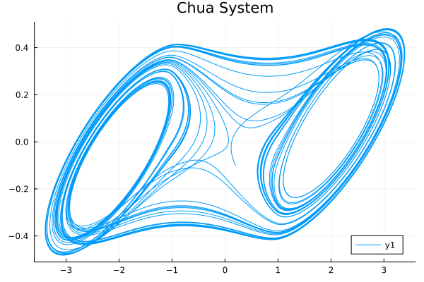
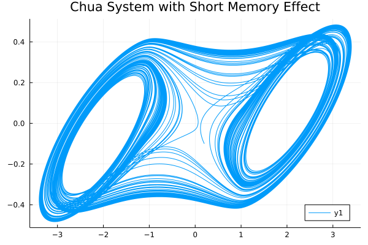

System of fractional differential equations
Many real life situations are governed by a system of fractional differential equations.
The usage of system of fractional differential equations solvers is quite similiar with DifferentialEquations.jl, all we need to do is to define our FODESystem and choose a solver to solve the problem:
julia> sol = solve(FODESystem, α, u0, tspan)Fractional Order Chua System Example
So here, we will look at an example: Chua circuit.
Let's see if we abstract the Chua system into a fractional differential equation system:
\[\begin{cases} D^{\alpha_1}x=10.725\{y-1.7802x-[0.1927(|x+1|-|x-1|)]\}\\ D^{\alpha_2}y=x-y+z\\ D^{\alpha_3}z=-10.593y-0.268z \end{cases}\]
Use the NonLinearAlg algorithm in FractionalDiffEq.jl to solve the Chua system[1] and plot the result:
using FractionalDiffEq, Plots
function chua!(du, x, p, t)
a, b, c, m0, m1 = p
du[1] = a*(x[2]-x[1]-(m1*x[1]+0.5*(m0-m1)*(abs(x[1]+1)-abs(x[1]-1))))
du[2] = x[1]-x[2]+x[3]
du[3] = -b*x[2]-c*x[3]
end
α = [0.93, 0.99, 0.92];
x0 = [0.2; -0.1; 0.1];
h = 0.01; tspan = (0, 50);
p = [10.725, 10.593, 0.268, -1.1726, -0.7872]
prob = FODESystem(chua!, α, x0, tspan, p)
sol = solve(prob, h, NonLinearAlg())
plot(sol, vars=(1, 2) title="Chua System", legend=:bottomright)
Cheers!🎉🎉🎉
Short memory effect in FDE
While the Chua system is a real life chaos system, when we want to simulate the system more to see the system more clearly, we must increase the simulating time $t_n$, however, limited by the fact that the hardware resources and the computing capability can't increase endlessly, we need to use short memory effect to help us improve the simulating efficiency.
To further elaborate, we can look at how the short memory affects the simulation:
By using the same code above, but set $t_n=500$ and memory length as $L_0=10000$ to see the model more comprehensively but reduce the computing cost same time:
result = solve(prob, h, tn, NonLinearAlg(), 10000)
For more fractional order chaotic systems, please see Chaos Gallery😉
- 1分数阶微积分学与分数阶控制 薛定宇 ISBN:9787030543981 Page 208